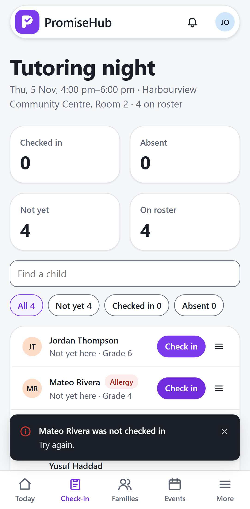

PromiseHub · Video 06
Check children in
One tap per child, on a phone at the door
One tap per child, on a phone at the door
Each tap is green at once; the toast counts who is here.

The row goes back, the totals return and the toast names the child.
A client action id per tap makes a repeat harmless.
Totals, search and filters.
| Case | Answer |
|---|---|
| Site lead, youth worker, director, admin | Check in, mark absent, walk-ins |
| Volunteer coordinator | Read the roster, no medical flags |
| Another organization's session | 404 |
| Roll Call off | 404; check-in redirects to Today |
Time zone, roster, now and earlier, absent then present, repeated taps, walk-ins, cancelled sessions, roles, cross-tenant.
Check-in, failure revert, absence, walk-in and module off at phone and desktop widths, axe on every state.
Next: read a Quick Card